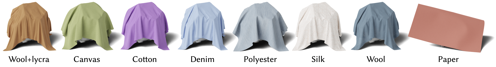

Dataset
Our dataset consists of over one million multiresolution cloth drapes. Our dataset generates multiresolution results for a diverse set of cloth-drape simulations parameterized over a wide range of cloth 1) shapes, 2) materials, 3) starting-drape configurations (rotations), and 4) sizes; as well as widely varying 5) collision-shape geometries and 6) collision-shape sizes. A small sampling of these geometries is shown here. This dataset targets both physics-based cloth upsampling and more broadly cloth simulation learning with high-fidelity cloth simulation data.

Material Gallery
We select eight representative real-world materials with varying material behaviors where the material parameters can be directly plugged into the PCS solver for generating our multiresolution results. We show case the finest level converged results here. See gallery.html for a gallery of cloth data.